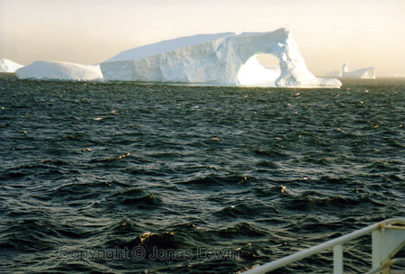
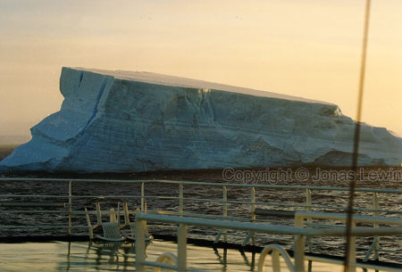
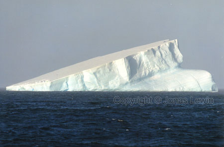
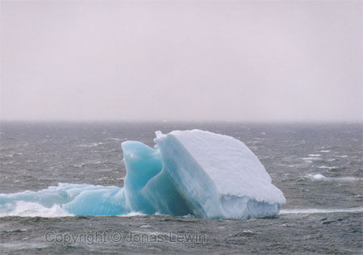

Just
by the South Orkney Islands, in the dawn, we saw an incredible number of
amazing icebergs.
We
even had some chairs to relax in when the weather was nice. But we didn't
have time to use them right now, as the previous days where quite windy.
M/S
Titanic. But wait a minute. Wasn't it the ship that was supposed to sink?
Some
blue-ish ice.
 The
small dot in the middle of the picture is a zodiac with 12 passengers.
The
small dot in the middle of the picture is a zodiac with 12 passengers.
I'm standing on a hill in Antarctica, and it was quite difficult to get here, as I fell through the snow so many times (some times every step I took) up to my knees.
A few seconds before I took this picture, I saw a whale
where the zodiac is heading.
If you want to see more pictures of ice in Antarctica, please visit the
photography section on my homepage.